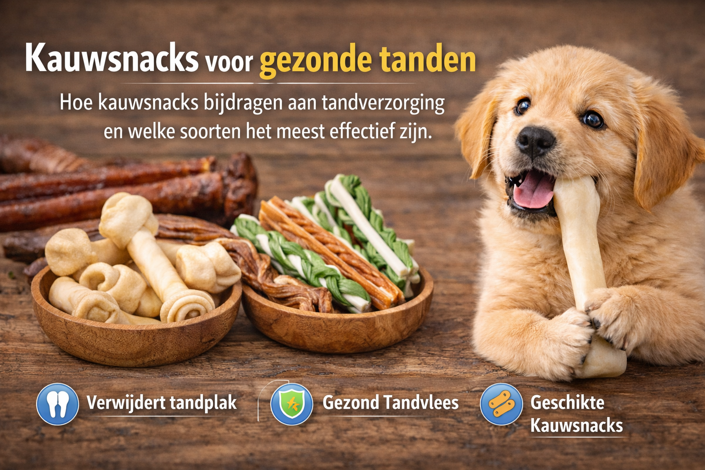

Kauwsnacks voor Gezonde Tanden
Hoe kauwsnacks bijdragen aan tandverzorging en welke soorten het meest effectief zijn.
Tandproblemen zijn niet gewoon onaangenaam voor honden—ze zijn een stille ziekte die ernstige gevolgen kan hebben. Het schokkende feit? 9 op de 10 honden hebben op hun derde verjaardag al parodontitis (tandvleesziekte). Toch is dit grotendeels voorkoombaar.
Infecties in de mondholte kunnen via de bloedbaan naar de nieren en het hart verspreiden. Dit artikel toont hoe kauwsnacks—van nature de beste tandenborstel van je hond—echte bescherming bieden.
Het Tandplak-Probleem
Tandplak vormt zich wanneer voedseldeeltjes, bacteriën, en speeksel op de tanden mengen. Dit gebeurt constant. Als je hond niet dagelijks kauwt, kan dit zachte tandplak binnen drie dagen verharden tot tandplak, en binnen enkele weken tot tandsteen.
Het cruciale verschil:
Tandplak = zacht, verwijderbaar thuis door kauwen of poetsen
Tandsteen = verharded tandplak, kan ALLEEN door de dierenarts verwijderd worden (meestal onder narcose)
Zodra tandsteen zich onder het tandvlees ophoopt, scheidt het de tand van het tandvlees, waardoor bacteriën een voedingsplaats vinden. Dit is het begin van gingivitis (tandvleesontsteking), het eerste stadium van parodontitis. En eenmaal daar aangekomen, is het proces onomkeerbaar.
Dit is waarom preventie zo kritisch is—niet behandeling.
Waarom Kauwsnacks Werken: De Wetenschap Erachter
Wanneer je hond op een kauwsnack bijt, gebeuren er drie dingen die tandgezondheid bevorderen:
1. Mechanische Schuring
Ruw, knarperig materiaal scraapt tandplak rechtstreeks van het tandoppervlak af. Dit is dezelfde principewerking als een tandenborstel, maar volledig natuurlijk. De microscepische deeltjes van de snack werken als lichte schuurmiddelen.
2. Speekselproductie
Kauwen stimuleert de speekselgland dramatisch. En speeksel is veel sterker dan je denkt—het heeft antibacteriële eigenschappen en helpt de pH in de mond gezond te houden. De verhoogde speekselstroom spoelt ook voedselresten weg.
3. Tandvlees-Stimulatie
De masserende beweging van het kauwen stimuleert de bloeddoorstroming naar het tandvlees. Dit versterkt het tandvlees, verbetert de ontstekingsrespons tegen bacteriën, en houdt het weefsel elastisch.
Waarom dit beter werkt dan veel denken: Dit zijn niet eenmalige effecten. Deze drie mechanismen werken samen om een continue beschermingslaag te bouwen. Elke dag kauw = elke dag preventie.
Wetenschappelijke ondersteuning: Een recente studie gepubliceerd in 2024 vond dat honden die dagelijks kauwsnacks aten, aanzienlijk lagere tandsteenbedekkging, tandsteendikte, gingivitis scores, en mondluchtgeur hadden vergeleken met controle honden die geen kauwsnacks kregen.
De VOHC Waarborging: Weten Wat Je Koopt
Niet alle kauwsnacks zijn gelijk gemaakt. Om marketingwaanzin te ontsnappen, moet je weten dat de Veterinary Oral Health Council (VOHC) bestaan.
Dit is een onafhankelijke organisatie die hondenvoedingsproducten rigoureus test. Producten ontvangen alleen het VOHC-zegel als ze in wetenschappelijke testen minstens 10% reductie in tandplak en/of tandsteen hebben aangetoond.
Dit betekent: geen "claims" zonder bewijs. Geen marketing-bullshit.
VOHC-Goedgekeurde Merken (enkele voorbeelden):
- Canine Greenies Dental Chews (diverse maten)
- Purina DentaLife Treats
- Hill's Science Diet Oral Care Chews
- C.E.T. Veggiedent FR3SH Chews
- OraVet Dental Hygiene Chews
- ProDen PlaqueOff Dental Bites
- WHIMZEES Brushzees
Als je een tandkauwsnack overweegt, zoek naar dit keurmerk. Het is jouw garantie dat de producent niet gewoon iets "tands-achtig" heeft gemaakt.
De Top 5 Beste Snacks voor Tandverzorging (Met Voorbehouden)
Laten we de verschillende typen kauwsnacks bespreken en hun effectiviteit beoordelen.
1. Rauwe Botten (RMB) – De Gouden Standaard
Dit zijn onbewerkte, niet-gekookte beenderen van rundvlees, lam, of gevogelte.
Waarom ze werken:
- Zeer ruw oppervlak scraapt tandplak af
- Bevatten glucosamine, calcium en fosfor (goed voor gezonde tanden en gewrichten)
- Verhogen speekselproductie enorm
- Natuurlijke, suikervrij
De regelmaatregels:
- ALTIJD rauw, NOOIT gekookt. Gekookte botten splinteren levengevaarlijk en kunnen darmperforatie, verstikking, of zelfs peritonitis (darmontsteking) veroorzaken.
- Geefduur: 2-3 uur per week volstaat
- Formaat: Kies naar grootte van je hond. Kleine honden: kalkoen/eendenvleugels; middelgrote: lamsribben; grote: rundmergranden.
- Voeding: Alleen rauwe botten vervangen NIET het volledige voedingsschema (ze hebben niet alles wat je hond nodig heeft).
Tip: Kleine botten als konijnenoren hebben extra voordeel: de haartjes werken als natuurlijke "pijpenragers" in de darmen en kunnen helpen bij wormpreventie.
2. Kauwsticks (Gehard Oppervlak) – De Practische Tweede
Professionele tandkauwsticks (zoals Greenies of Veggiedent) zijn gemaakt met een ruw oppervlak en enzymen.
Voordelen:
- VOHC-gecertificeerd (dus bewezen effectief)
- Veiliger dan botten (geen splinteringsgevaar)
- Enzymen die vochtiger raken helpen bacteriën verbreken
- Geschikt voor alle leeftijden
- Langer kauwplezier dan snelle snacks
Let op:
- Controleer ingrediënten. Vermijd sticks met veel suiker of kunstmatige additieven
- Sommige goedkope "tarwegluten" sticks zijn zeer allergen en bevatten veel suiker—vermijd deze
3. Wortelen – De Dagelijkse Truc
Dit is misschien wel de meest onderschatte tandverzorgingsmethode.
De wetenschap:
Dagelijkse rauwe wortelen zijn volgens veel experts de meest effectieve tandverzorgingsmethode. Ze zijn:
- Ruw en knapperig (natuurlijke schuring)
- Vol vezels (goed voor spijsvertering)
- Rijk aan vitamine A (tandgezondheid)
- Ultra laag in calorieën
- Volledig veilig (honden kunnen niet op wortelen ersticken)
Hoe: Geef dagelijks een verse, ongeschilde wortel. Je hond knabbelt erop, reinigt zijn tanden, en je merkt dat zijn adem frisse raakt.
4. Runderen Kophuid – De Populaire Keuze
Dit zijn gedroogde stukken van runderhuid (NIET rawhide/gebleekt).
Voordelen:
- Zeer duurzaam (lange kauwduur)
- Veel speekselproductie
- Natuurlijke, enkele ingredient
- Geschikt voor alle maten honden
Voorbehoud:
- Erg vet (zuiver vet, niet goed voor obese honden)
- Kan verstoppingen veroorzaken bij gretige kauwers
5. Gedroogde Long – De Zachte Optie
Voor honden met zwakkere tanden of gevoelige monden.
Voordelen:
- Vetarm
- Laag in calorieën
- Laag allergen risico
- Goed voor gevoelige maagjes
Nadeel:
Veel minder tandverzorgingswaarde dan ruwere snacks (te zacht)
Wat NIET Te Geven: Gekookte Botten
Dit verdient een eigen sectie omdat het één van de meest gevaarlijke fouten is.
Gekookte botten worden door veel eigenaren gegeven omdat ze "natuurlijk" lijken. In werkelijkheid zijn ze dodelijk.
Hitte verandert de botstructuur. In plaats van netjes te breken, splinteren gekookte botten in scherpe, glasachtige splinters:
- Gebroken tanden: Splinters kunnen melktandjes of volwassen tanden breken
- Verstikking: Kleine splinters kunnen in de keel schieten
- Darmperforatie: Splinters kunnen gaten prikken in maag of darmen
- Peritonitis: Een darmgat veroorzaakt bacteriële infectie in de buik (often fatal)
Het antwoord is niet "geef gekookte botten voorzichtig." Het antwoord is: geef ze nooit, onder geen omstandigheden.
De Effectiviteitshiërarchie: Wat Werkt Het Beste?
Een belangrijke studie uit 2019 vergeleek drie methoden van tandverzorging:
Effectiviteit vergelijking:
- Dagelijks tanden poetsen: 100% (baseline)
- Dagelijke kauwsnack: ~30% van poetsen effectiviteit
- Speciale tandvoeding: ~30% van poetsen effectiviteit
Dit betekent: Kauwsnacks zijn niet beter dan tanden poetsen, maar ze zijn beter dan niets, en veel beter dan je hond niets geven.
De ideale benadering? Combinatie:
- Dagelijks tanden poetsen (goud)
- Dagelijkse kauwsnack (zilver)
- Speciale tandvoeding (brons)
- Regelmatige tandcontroles bij de dierenarts (preventie)
Praktische Gids: Implementatie
Voor Puppies (8-16 Weken):
- Begin met zeer zachte kauwsnacks (gedroogde konijnenoren)
- Vermijd harde kauwsticks
- Begin tanden poetsen als ze hun melktandjes hebben
Voor Jongvolwassenen (4-12 Maanden):
- Introductie kauwsticks
- Begin met zachte rauwe botten (kipvleugels)
- Dagelijkse wortelen
- 2-3x per week kauwen volstaat (niet dagelijks)
Voor Volwassenen (1 Jaar+):
- Rauwe botten 2x per week
- Dagelijks tandkauwstick OF wortel
- Wekelijkse tandcontroles (zelf controleren op rood tandvlees)
- Jaarlijks professioneel schoonmaken bij dierenarts
Voor Senioren (7 Jaar+):
- Zeer zachte kauwsticks
- Gedroogde long in plaats van rauwe botten (zwakkere tanden)
- Meer tandpoetsen (hun bacteriële belasting stijgt)
Enzymen, Zeewier en Aanvullende Strategieën
Sommige kauwsnacks bevatten zeewier (zoals ProDen PlaqueOff) of enzymen (zoals bromelain) die een extra laag bescherming bieden.
Hoe werken ze?
- Enzymen: Breken bacteriële eiwitketens af zodra ze in contact komen met speeksel
- Zeewier: Heeft antibacteriële eigenschappen en helpt de orale microbiota in de juiste richting te verschuiven
Deze zijn nuttig maar niet essentieel. Ze zijn een aanvulling op mechanische tandverzorging, geen vervanging.
De Waarheid Over Tandpoetsen
Laten we het duidelijk stellen: tanden poetsen blijft de meest effectieve methode. Maar veel eigenaren geven op omdat hun hond het niet leuk vindt.
Tips:
- Begin jong (3-4 maanden). Maak het een positief ritueel
- Gebruik alleen tandpasta voor honden (tandpasta voor mensen bevat fluoride, wat giftig is voor honden)
- Slechts 30 seconden per dag volstaat
- Maak het leuk: Gebruik een ultrazachte tandenborstel, hond-gearomatiseerde tandpasta (kipsmaak), en beloon na afloop
Conclusie: Kauwsnacks Zijn Je Geheim Wapen
Tandproblemen zijn één van de meest onder-gediagnosticeerde ziekten bij honden. Ze ontstaan stilletjes, en tegen de tijd dat je het merkt, is ernstige schade al gedaan.
Maar hier is het goede nieuws: preventie werkt beter dan je denkt, en het hoeft niet ingewikkeld te zijn.
Een combinatie van:
- Dagelijkse kauwsnacks (wortelen, kauwsticks)
- 2x per week rauwe botten (of gedroogde lange voor senioren)
- Wekelijkse tandcontroles (zelf controleren)
- Jaarlijkse professionele schoonmaken (als nodig)
Dit regimen halveert het risico van parodontitis en bespaart je duizenden euro's in dierenartsenkosten.
Wil je je hond gezond zien groeien? Begin morgen met een wortel. Het is het goedkoopste, veiligste en meest effectieve wat je kunt doen.
🦷 Klaar voor gezonde tanden?
Bekijk onze selectie tandvriendelijke kauwsnacks, speciaal gekozen voor optimale mondgezondheid.
Bekijk Kauwsnacks →📚 Bronvermeldingen
De informatie in dit artikel is zorgvuldig samengesteld op basis van wetenschappelijk onderzoek en veterinaire studies over tandgezondheid bij honden.
- PMC/Oba 2024 - Effects of a novel dental chew on oral health outcomes - PubMed
- Rauwe botten voor honden voordelen - SeaweedforDogs
- Tandplak en tandsteen bij honden - De DierenKliniek
- Tandreinigingsproducten voor honden - SeaweedforDogs
- Tandverzorging bij honden - MaxiZoo
- Prospectieve studie tandpoetsen vs kauwsnacks - Wiley Online Library
- Tandsteen voorkomen natuurlijk wortel - VegaVriend
- De 9 beste snacks voor gebitsreiniging - Antos
- Wortels voor honden - Annimally
- VOHC Accepted Products - VOHC
- Hoe voorkom je gebitsproblemen - Hondfocus
- Parodontitis bij honden - SeaweedforDogs
- Mag een hond wortel eten - JustRussel